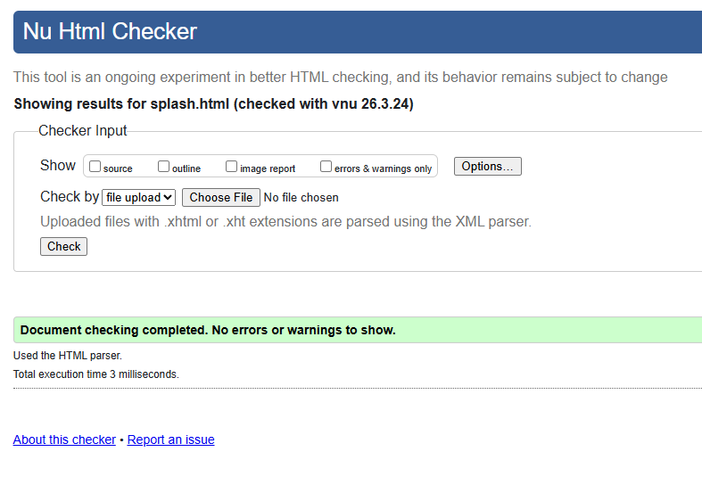
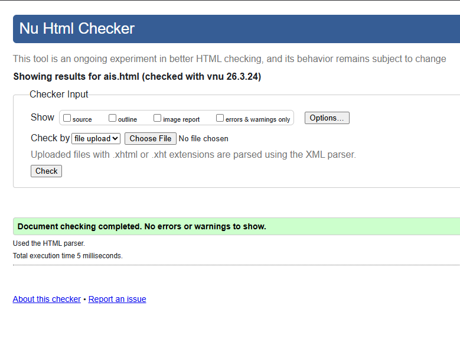
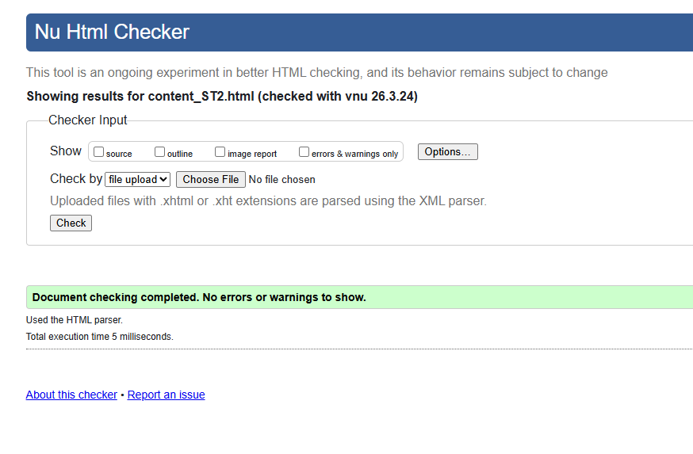

Splash Screen Validation Report
`splash.html` needed cleanup around the refresh meta syntax, the decorative loader labelling, and HTML5 void-element formatting. After those fixes, the page validated while keeping the redirect and countdown behaviour unchanged.

Back to Page Editor Page
Action Impact Simulator Validation Report
The AIS page originally needed heading-structure fixes as well as HTML5 void-element cleanup. I added section headings in the right order so the page now validates without changing the simulator logic.

Back to Page Editor Page
Return to the Action Impact Simulator discussion in the Page Editor.
Content Page Validation Report
`content_ST2.html` validated after I changed layout-only wrappers to `div` elements and removed the remaining self-closing slash warnings on void tags. The screenshot below is the final validation evidence for that page.
